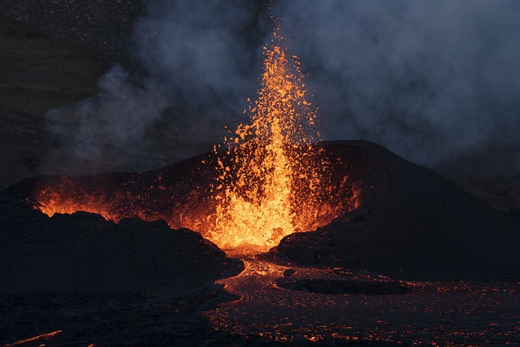
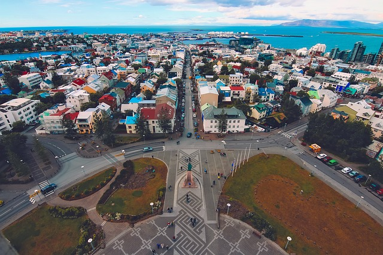

Whether you're taking day trip through the golden circle or south coast, or even waking up to a view of Mount Esja, you will not be able to deny the the beauty of Iceland's geogrpahical terrain! The sheer beauty will leave you changed and a whole new perspective.
Now I have to admit, if you're looking for a sun-beach holiday, you'll be if you visit Iceland. So wrap up warm when visiting because the weather can change very drastically! But if you're visiting with kids, they will love the opportunity to experience the snow along with everything else on this list!

Who doesn't love a good waterfall? There are many popular spots for tourists to visit with an abundance of choice! On the South Coast you can visit the immense Skogafoss waterfall with it's immense power or the Selfjalandsfoss waterfall in which you can walk around behind it! There's multitude of waterfalls you can discover here! So keep your eye out and maybe take a pit stop!

Starting as just a farmstead, to then having a population 140,000 (that's a little bit above a third of the population!) From the Sun Yoyager,to the Hallgrimskirkja church, to the Reykjavik Concert Hall, Perlan mueseum, local pools, Althing parliament, local bars & restaurants, there's so much to do in the capital! The best part is is that it's very easy to make your way around by foot!
Everyone will know the big name: Björk. You may also have heard of Sigur Ros, Ásgeir, Of Monsters & Men, Múm, or even Kaleo. Iceland is renowned for releasing some of the most interesting and ecclectic music in the world, some of the artists have gone on to inspire new & old generations of musicians! When visiting be sure to add their songs to your playlist! From 'Hyperballad', to 'King & Cross', to 'Svefn-g-englar', to 'Way Down We Go', to 'Dirty Paws', you're bound to find at least something you will like!

Anyone who loves langugaes will know how notorious Icelandic can be to learn! But fear not if you don't know the language as the majority of Icelanders know english! Though if you go, make sure to learn some easy words or phrases (if you want to challenge yourself) to show your enthusiasm during your visit! Many locals will be very appreciative of this and are very welcoming!

Iceland is a very young country geographically, which means that the ground is also very hot! Causing natural phenominons like gerysers and hot springs to occur whereby water is heated from the ground naturally! Sometimes these result in geysers whereby water will shoot out of the ground every few minutes! If you don't believe us, go see them for yourselves!

paragraph
paragraph

paragraph
paragraph
*free to use / open source* images from: pixabay.com, bjork.com